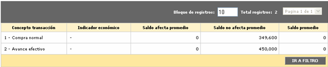

Saldos por concepto
En este formulario que se invoca desde el detalle consulta de la tarjeta, en el hipervínculo información básica, saldos la entidad puede consultar para una fecha en particular la manera como se afectaron los saldos de la tarjeta, de acuerdo con el concepto de la transacción.
Una vez que el actor ingresa la fecha en formato YYYY-MM-DD mediante el botón Consultar el sistema trae los registros que coincidan con la búsqueda y los muestra en el formulario.

Descripción de campos
|
Concepto transacción |
Campo que muestra los conceptos de transacción que tuvieron afectación en la fecha indicada. |
|
Indicador económico |
Si para el concepto se ha definido algún indicador económico, en este campo se muestra el código y descripción del mismo. |
Saldo afecta promedio |
En caso que el concepto afecte el saldo promedio de la tarjeta, en este campo se muestra el monto de las transacciones efectuadas en la fecha indicada. Este campo es mutuamente excluyente con el siguiente. |
Saldo no afecta promedio |
Cuando el concepto no afecta el saldo promedio de la tarjeta, en este campo se muestra el monto de las transacciones efectuadas en la fecha indicada. Este campo es mutuamente excluyente con el anterior. |
Saldo promedio |
Este campo despliega el valor del saldo promedio para la fecha de consulta y el respectivo concepto de la transacción. El saldo promedio se incrementa con los nuevos consumos y se disminuye con los pagos realizados; de igual manera otras transacciones también lo pueden afectar aumentándolo o disminuyéndolo de acuerdo con la manera en que se hayan parametrizado los conceptos de transacción. |